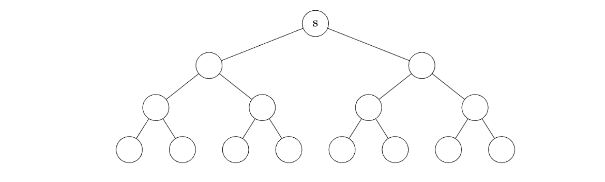
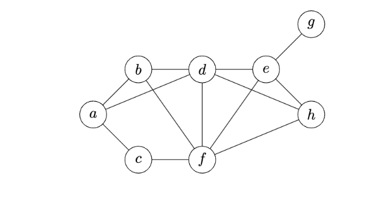
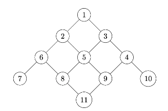
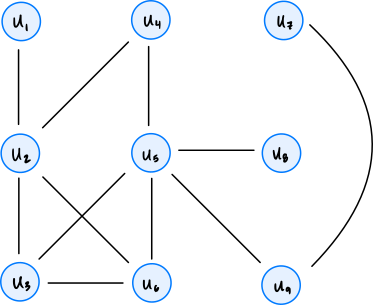
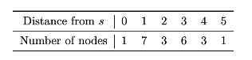

Quiz 07
Practice problems for topics on Quiz 07.
Tags in this problem set:
Problem #235
Tags: lecture-12, breadth first search
Suppose a breadth-first search is performed on the following tree, starting at the root node \(s\):

What is the most number of nodes that can be in the queue at any one time?
Solution
8
Problem #241
Tags: lecture-12, breadth first search
Consider the code below, which is a modification of the BFS algorithm presented in lecture: there are two new lines, marked with comments.
from collections import deque
def modified_bfs(graph, source):
"""Start a BFS at `source`."""
status = {node: 'undiscovered' for node in graph.nodes}
status[source] = 'pending'
pending = deque([source])
while pending:
u = pending.popleft()
for v in graph.neighbors(u):
for node in graph.nodes: # < -- this is the modification
print(status[node]) # < -- this is the modification
if status[v] == 'undiscovered':
status[v] = 'pending'
pending.append(v)
status[u] = 'visited'What is the time complexity of this algorithm, in terms of \(|V|\) and \(|E|\)? You may assume the graph is undirected and connected, so that all nodes are reachable from the source.
Solution
Because the graph is connected, \(|E| \geq |V| - 1\), and so \(\Theta(VE)\) and \(\Theta(VE + V)\) are equivalent. Only \(\Theta(VE + V)\) is an option so \(\Theta(VE + V)\) is the correct answer.
Problem #245
Tags: lecture-12, breadth first search
Suppose a breadth first search (BFS) is performed on the graph shown below using node \(a\) as the source. Which node will be the BFS predecessor of node \(h\) when the search is complete? You should use the convention that neighbors are produced in alphabetical order.

Solution
\(d\)
Problem #246
Tags: lecture-12, breadth first search
Suppose a BFS is run on the graph below using node 1 as the source node. Which node will be the BFS predecessor of node 8? You should use the convention that neighbors are produced in ascending order by label.

Solution
5
Problem #247
Tags: lecture-12, breadth first search
Suppose a BFS is run on the graph below using node 1 as the source node. Which node will be the BFS predecessor of node 9? You should use the convention that neighbors are produced in ascending order by label.

Solution
5
Problem #248
Tags: lecture-12, breadth first search
Suppose a breadth first search (BFS) is run on the graph shown below using node \(u_4\) as the source and the convention that graph.neighbors produces nodes in ascending order by label. What will be the predecessor of \(u_6\) in the BFS?

Solution
\(u_2\)
Problem #251
Tags: lecture-12, connected components, breadth first search, shortest paths
Suppose you are about to run a BFS on a graph whose exact edge structure you do not know. However, you do know that the graph is undirected, has 8 nodes, and has 2 connected components.
You have picked a node to start on and are about to run a BFS to find shortest path distances. What is the greatest shortest path distance between the starting node and any other node that could possibly be found in such a graph? Hint: consider how large a connected component could possibly be.
Solution
Answer: 6. The largest a connected component can be is 7 nodes (the other component must have at least one node). If those 7 nodes form a path and we start at one end, the node at the other end is at distance 6.
Problem #252
Tags: lecture-12, breadth first search
Suppose a breadth first search (BFS) is run on a graph \(G = (V, E)\), and that node \(u\) is distance 5 from the source while node \(v\) is distance 3 from the source. True or False: it is possible that at some point during the BFS, both \(u\) and \(v\) are in the pending queue at the same time.
Solution
False.
At any moment, the nodes in the BFS queue are all at distance \(d\) or \(d + 1\) from the source, for some \(d\). So two nodes whose distances differ by 2 can never be in the queue together.
Problem #253
Tags: lecture-12, breadth first search
Suppose a breadth first search (BFS) is run on a graph \(G = (V, E)\), and that node \(u\) is distance 6 from the source while node \(v\) is distance 7 from the source. True or False: it is possible that at some point during the BFS, both \(u\) and \(v\) are in the pending queue at the same time.
Solution
True. Suppose another node \(w\) is also at distance 6 and is a neighbor of \(v\). If \(w\) is popped from the queue before \(u\), then \(v\) is added to the queue while \(u\) is still waiting in it.
Problem #254
Tags: lecture-12, breadth first search
Suppose a breadth first search (BFS) is run on a graph \(G = (V, E)\), and that node \(u\) is the only node which is distance 6 from the source while node \(v\) is distance 7 from the source. True or False: it is possible that at some point during the BFS, both \(u\) and \(v\) are in the pending queue at the same time.
Solution
False. A node at distance 7 must be discovered while BFS is exploring the neighbors of a node at distance 6, and the only such node is \(u\). But \(u\) is removed from the queue before its neighbors are explored, so by the time \(v\) is added to the queue, \(u\) is no longer in it.
Problem #255
Tags: lecture-12, breadth first search, shortest paths
Suppose that a breadth-first search on an undirected graph \(G\) is paused and the queue is printed. Suppose that every node in the queue is either distance 5 from the source, or distance 6. At this moment, node \(u\) is undiscovered.
True or False: it is possible that node \(u\) is distance 4 from the source.
Solution
False.
BFS pops nodes in order of distance, so if every node in the queue is at distance 5 or more, every node at distance 4 has already been popped. That means it was discovered earlier, so it can't be undiscovered now.
Problem #256
Tags: lecture-12, breadth first search
Suppose a breadth first search on an undirected, connected graph is paused at a particular moment in time and the node statuses are printed. Suppose it is found that all nodes which are distance 6 from the source are marked ``visited''.
True or False: it is possible that there is a node, distance 7 from the source, whose status is ``undiscovered''.
Solution
False.
Every node at distance 7 has a neighbor at distance 6 (the node just before it on a shortest path). When that neighbor was marked visited, all of its neighbors had already been discovered, so the node at distance 7 must have been discovered too.
Problem #257
Tags: lecture-12, breadth first search
Suppose a breadth-first search (BFS) is performed in order to calculate a dictionary of shortest path distances, dist, from a source node \(s\) to all nodes reachable from \(s\) in an undirected graph \(G = (V, E)\).
Suppose node \(u\) is a node in \(G\), and \(v_1\) and \(v_2\) are two neighbors of node \(u\). Assume that \(u\) is reachable from \(s\).
Part 1)
What is the largest that \(|\)dist[v_2] - dist[v_1]\(|\) can be?
Solution
2
Part 2)
What is the smallest that \(|\)dist[v_2] - dist[v_1]\(|\) can be?
Solution
0
Problem #258
Tags: lecture-12, shortest path, graph theory
Suppose an undirected, connected graph has \(n\) nodes, half of which are colored red and the other half are colored blue. Each red node is neighbors with \(n/4\) blue nodes, and each blue node is neighbors with \(n/4\) red nodes. There are no edges between nodes of the same color.
What is the time complexity of computing a shortest path from a given red node to all other red nodes using BFS?
Solution
\(\Theta(n^2)\)
Problem #259
Tags: lecture-12, breadth first search, shortest paths
Consider the following problem: you're given an unweighted graph \(G\), a source node \(u\), a destination node \(v\), and an "intermediate" node \(x\). Your goal is to find a shortest path from \(u\) to \(v\) that passes through \(x\).
Your friend proposes the following algorithm: run a BFS starting at node \(u\), then terminate it when it reaches node \(x\). Then start a BFS at node \(x\), and terminate it when it reaches node \(v\).
Does this algorithm work?
Solution
Yes. Any path from \(u\) to \(v\) through \(x\) consists of a path from \(u\) to \(x\) followed by a path from \(x\) to \(v\), so its length is at least the \(u\)-to-\(x\) distance plus the \(x\)-to-\(v\) distance. The first BFS finds a shortest path from \(u\) to \(x\) and the second finds a shortest path from \(x\) to \(v\); joining them gives a path achieving this minimum.
Problem #260
Tags: lecture-12, shortest paths
Let \(G\) be an undirected graph, and let \(u, v,\) and \(z\) be three nodes in the graph. Consider the problem of finding a shortest path from \(u\) to \(v\) which passes through node \(z\).
True or False: a shortest path from \(u\) to \(v\) passing through \(z\) may include node \(u\) twice.
Solution
True.
Consider the "chain" graph A - B - C - D - E. The shortest path from C to E that passes through B is C - B - C - D - E. It passes through C twice.
Problem #261
Tags: lecture-12, breadth first search
The table below shows the number of nodes in a graph \(G\) which are distance 0 from node \(s\), distance 1 from node \(s\), distance 2, etc.:

Suppose a BFS is performed on this graph with node \(s\) as the starting node. What is the largest number of nodes that could possibly be in the queue at any one time?
Solution
Remember that the queue can only simultaneously contain nodes at two different distances (it can't contain nodes at distance 1, distance 2, and distance 3 at the same time, but it can contain nodes at distance 1 and distance 2 at the same time).
The largest number of nodes that could possibly be in the queue at any one time is when we have (almost) all of the nodes from the first distance, and all of the nodes from the second distance.
In this graph, let \(u\) be a neighbor of the source, and suppose it has an edge with all nodes that are distance 2 from the source. If \(u\) is the first node popped from the queue (after the source), then once its neighbors are added to the queue, the queue will contain all of the nodes at distance 1 except for \(u\)(for 6 nodes in total), and all of the nodes at distance 2 (for 3 nodes in total). This gives us a total of 9 nodes in the queue.